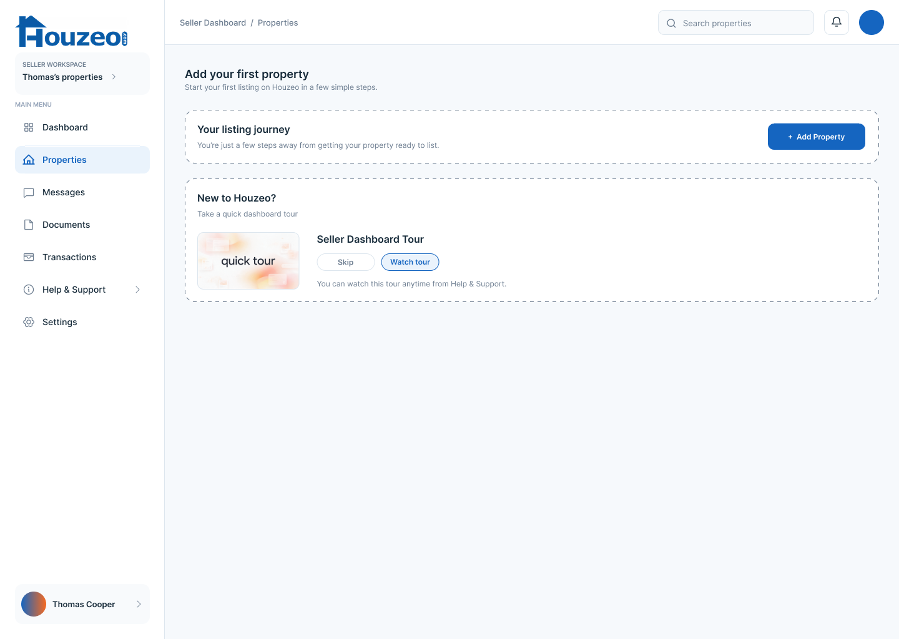
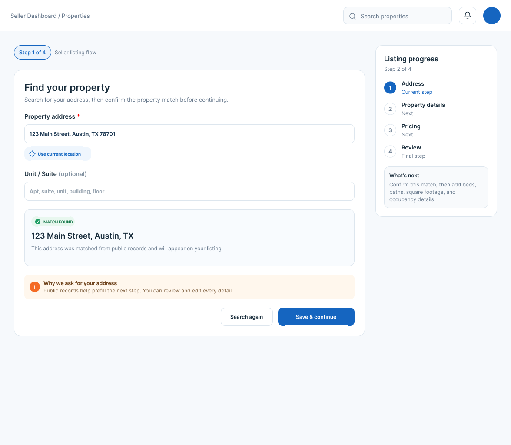
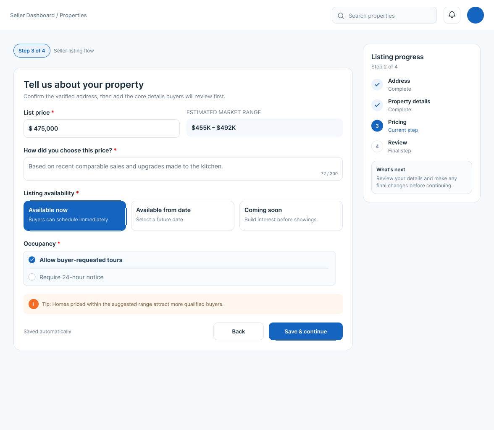

Designing a clearer path to a live listing.
For someone selling a home for the first time, every next step can feel consequential. The experience needed to make the work ahead understandable without turning the interface into a manual.
I focused on two connected moments: the dashboard where a seller begins and manages properties, and the listing flow where they provide property details and choose a price.
Uncertainty was the friction.
A new seller may not know which task matters first, why an address is needed, or how much of the listing process remains.
Those questions arise at different points in the journey. A generic help page would make people leave the task to find an answer, so I treated guidance as part of the flow itself.
Where do I begin?
Make the first action and optional help easy to find.
Why do you need this?
Explain how information helps complete the listing.
What comes next?
Show progress and the next decision before it arrives.
Put context where the choice happens.
I kept the primary task prominent, then added brief explanations at the moments where a seller might hesitate.
This avoids making everyone take a mandatory tour or read a long guide. Sellers who are ready can continue; those who need reassurance get it without leaving the flow.
More guidance can create more visual noise. I kept each message short and tied it to a specific decision: skip a tour, confirm an address, set a price, or complete an urgent task.
Small signals, placed at the right time.
Make skipping the tour feel safe.
A seller can skip onboarding to get started, with a note that the tour remains available in Help & Support.

Show the whole journey.
The four listing stages stay visible, with the current step highlighted and a short “What’s next” explanation. Near the address field, a separate note explains that public records can prefill details and that they remain editable.

Give pricing context in the form.
An estimated market range sits beside the list-price input, with a concise tip about attracting qualified buyers. The guidance appears while the seller is making the choice, not after it.

Bring urgent work to the top.
On the properties dashboard, a “Needs your attention” area surfaces a required disclosure. The affected property card repeats the status and offers a direct route to complete it.

A connected seller journey.
The designed prototype connects the first-property dashboard, a four-stage listing flow, contextual pricing guidance, and a property-management view.
These screens show the intended experience and my design decisions. They do not establish that sellers completed listings faster or felt more confident in practice.
Test whether the guidance actually helps.
I would test this with first-time sellers before claiming a user or business outcome.
The key questions: Can sellers find their first action? Do they understand why the address is requested? Can they tell what remains in the flow? Can they identify and complete the task that needs attention? Task success, hesitation points, completion time, and seller feedback would show whether the design works.
No usability results or post-launch metrics are available for this case study yet.
Reassurance without slowing sellers down.
These choices aim to support a first-time seller while leaving room for someone who is ready to move quickly.
Freedom can mean missed guidance
Skipping the tour makes the first action faster, but some sellers may miss useful context. Keeping the tour available later makes that choice reversible.
Clarity adds visual weight
Explaining why an address is needed and adding pricing context can reduce uncertainty, but also adds text. Each message stays close to the decision it supports.
Honesty can feel like more work
Showing all four listing stages may look longer than revealing one form at a time. In return, sellers can see where they are and what is still ahead.
These are design risks to test, not measured seller outcomes.